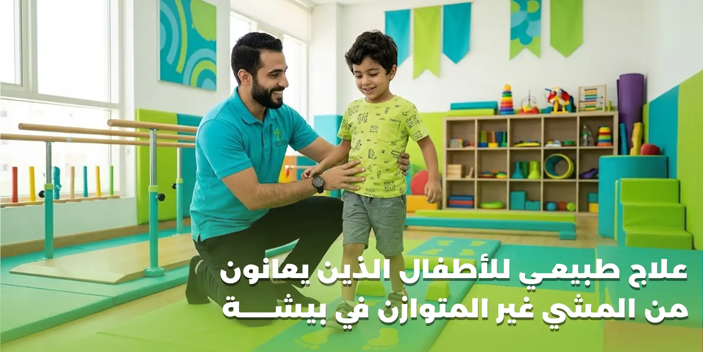

يُعد المشي من أهم المهارات الحركية التي يكتسبها الطفل خلال مراحل نموه، حيث يعتمد على التناسق بين العضلات والمفاصل والجهاز العصبي للحفاظ على ثبات الجسم والتحكم في حركة الساقين أثناء الوقوف والمشي. وقد يلاحظ بعض أولياء الأمور أن طفلهم يمشي بطريقة غير متوازنة، أو يميل بجسمه إلى أحد الجانبين، أو يتعثر بصورة متكررة، أو يجد صعوبة في الحفاظ على ثباته أثناء الحركة.
وتختلف أسباب المشي غير المتوازن عند الأطفال من حالة إلى أخرى؛ فقد يرتبط الأمر باختلافات في نمط الحركة أو ضعف بعض العضلات أو مشكلات في التوازن والتناسق الحركي، وقد يكون مرتبطًا بحالات عصبية أو عضلية أو مشكلات في العظام والمفاصل تحتاج إلى تقييم متخصص.
ولهذا يبحث كثير من أولياء الأمور عن علاج طبيعي للأطفال في بيشة بهدف تحسين طريقة المشي ومساعدة الطفل على اكتساب تحكم أفضل في حركة الجسم والساقين. ويُعد العلاج الطبيعي والتأهيل الحركي من الوسائل التي قد تساعد الأطفال الذين يعانون من بعض اضطرابات المشي، من خلال تقييم القدرات الحركية واختيار تمارين مناسبة للعمر والحالة الصحية.
في مركز هنا التفاؤل للعلاج الطبيعي والتأهيل الطبي في بيشة، يمكن لأولياء الأمور الاستفسار عن خدمات العلاج الطبيعي والتأهيل المتاحة للأطفال، ومعرفة مدى ملاءمتها لاحتياجات الطفل بعد تقييم حالته وتحديد طبيعة الصعوبة التي يواجهها أثناء المشي.
ما المقصود بالمشي غير المتوازن عند الأطفال؟
المشي غير المتوازن هو وصف لمجموعة من أنماط المشي التي يظهر فيها اختلاف في ثبات الجسم أو تناسق حركة الأطراف أثناء الانتقال من خطوة إلى أخرى.
وقد يلاحظ الوالدان أن الطفل لا يضع قدميه على الأرض بطريقة متناسقة، أو أن خطواته غير مستقرة، أو أنه يميل بجسمه أثناء الحركة، أو يستخدم أحد الطرفين بطريقة مختلفة عن الآخر.
ولا يُعد كل اختلاف في طريقة المشي علامة على وجود مشكلة صحية؛ فالأطفال يكتسبون المهارات الحركية تدريجيًا، وقد تختلف أنماط الحركة بينهم خلال مراحل النمو. لكن استمرار المشي غير المتوازن أو ظهور صعوبة واضحة في الحركة أو تكرار السقوط يستدعي تقييمًا لمعرفة السبب.
ويجب التمييز بين الاختلافات الطبيعية في اكتساب مهارة المشي وبين اضطرابات المشي التي قد ترتبط بمشكلة عضلية أو عصبية أو هيكلية.
أشكال المشي غير المتوازن عند الأطفال
توجد عدة صور قد يظهر بها اضطراب المشي عند الأطفال، ويساعد التعرف عليها على وصف المشكلة بصورة أوضح عند مراجعة الطبيب أو اختصاصي العلاج الطبيعي.
1. المشي مع الميل إلى أحد الجانبين
قد يلاحظ الوالدان أن الطفل يميل بجسمه إلى جهة معينة أثناء المشي، أو أن حركة الحوض والكتفين غير متناسقة بين الجانبين. وقد يرتبط هذا النمط باختلاف في القوة العضلية أو حركة المفاصل أو طريقة تحميل الوزن على القدمين، كما قد تكون له أسباب أخرى تحتاج إلى فحص متخصص.
2. المشي مع تمايل الجسم
يظهر هذا النمط عندما يتحرك جسم الطفل من جانب إلى آخر أثناء المشي بصورة ملحوظة، وقد يصاحبه اختلاف في حركة الحوض أو اتساع قاعدة المشي. وقد يرتبط التمايل ببعض حالات ضعف العضلات أو اضطرابات الحركة، ولذلك يجب تقييم القوة العضلية وطريقة المشي لمعرفة السبب.
3. المشي مع تكرار التعثر والسقوط
قد يتعثر الطفل بصورة متكررة أثناء المشي أو الجري، أو يجد صعوبة في الحفاظ على توازنه عند تغيير الاتجاه أو تجاوز العوائق. وقد يرتبط ذلك بضعف التحكم الحركي أو مشكلات التوازن أو ضعف العضلات أو أسباب أخرى.
4. المشي على أطراف الأصابع
قد يمشي بعض الأطفال على أطراف أصابع القدم بدلًا من ملامسة الكعب للأرض بصورة طبيعية. وقد يظهر ذلك خلال مراحل اكتساب المشي، لكن استمراره أو ارتباطه بتيبس عضلات الساق أو محدودية حركة الكاحل يستدعي التقييم.
5. اختلاف طول الخطوات بين القدمين
قد يلاحظ الوالدان أن الطفل يأخذ خطوات أطول بإحدى القدمين مقارنة بالأخرى، أو أن إحدى الساقين تتحرك بطريقة مختلفة أثناء المشي. وقد يكون هذا الاختلاف مرتبطًا بالألم أو محدودية الحركة أو ضعف العضلات أو اختلافات في بنية الأطراف.
6. صعوبة المشي في خط مستقيم
قد يجد الطفل صعوبة في الحفاظ على اتجاه الحركة، أو ينحرف بصورة متكررة أثناء المشي، أو يواجه صعوبة عند تغيير الاتجاه. وقد ترتبط هذه المشكلة باضطرابات التوازن والتناسق الحركي، أو بعض المشكلات العصبية أو الحسية.
أسباب المشي غير المتوازن عند الأطفال
لا يوجد سبب واحد للمشي غير المتوازن، فقد تنتج المشكلة عن عوامل مختلفة تتعلق بالعضلات أو المفاصل أو الجهاز العصبي أو التوازن والتحكم في الحركة.
1. ضعف العضلات
تساعد العضلات على تثبيت الجسم والتحكم في حركة الساقين والحوض أثناء المشي. وقد يؤدي ضعف بعض العضلات إلى صعوبة الحفاظ على وضع الجسم أو أداء الخطوات بصورة متناسقة. وقد يظهر ضعف العضلات في صورة تمايل أثناء المشي أو صعوبة صعود الدرج أو تكرار السقوط أو التعب السريع عند الحركة.
2. اضطرابات التوازن
يعتمد المشي الطبيعي على قدرة الجسم على الحفاظ على مركز الثقل والتحكم في وضعية الجسم أثناء الحركة. وقد يواجه بعض الأطفال صعوبة في الحفاظ على التوازن عند الوقوف أو المشي أو تغيير الاتجاه، مما يؤدي إلى خطوات غير مستقرة أو تعثر متكرر.
3. ضعف التناسق الحركي
يتطلب المشي تنسيقًا بين حركة الساقين والذراعين والجذع، إلى جانب تنظيم توقيت الخطوات ونقل وزن الجسم من قدم إلى أخرى. وقد تؤدي بعض اضطرابات التناسق الحركي إلى صعوبة تنفيذ هذه الحركات بصورة متتابعة ومنظمة.
4. اضطرابات الجهاز العصبي
قد ترتبط بعض حالات المشي غير المتوازن بمشكلات تؤثر في الجهاز العصبي المسؤول عن التحكم في العضلات والحركة. ومن أمثلتها بعض الاضطرابات العصبية والحالات التي تؤثر في التحكم الحركي، مثل الشلل الدماغي أو بعض الأمراض العصبية الأخرى. وتحتاج هذه الحالات إلى تقييم طبي متخصص لتحديد طبيعة الاضطراب ومدى تأثيره في حركة الطفل.
5. مشكلات العظام والمفاصل
قد تؤثر بعض المشكلات في شكل الأطراف أو حركة المفاصل أو طريقة تحميل الوزن على القدمين، مما ينعكس على نمط المشي. وقد تشمل هذه المشكلات اختلافات في محاذاة الساقين أو مشكلات مفصل الورك أو الركبة أو القدم، ولا يمكن تحديد السبب اعتمادًا على المظهر الخارجي وحده.
6. اختلافات طول الطرفين السفليين
قد يؤدي وجود اختلاف ملحوظ في طول الساقين إلى تغير طريقة توزيع الوزن أثناء المشي، وقد يظهر ذلك في صورة ميل الجسم أو اختلاف طول الخطوات. ويحتاج هذا الأمر إلى تقييم طبي لتحديد مقدار الاختلاف وتأثيره الوظيفي.
7. مشكلات القدم والكاحل
قد تؤثر بعض مشكلات القدم أو الكاحل في طريقة ملامسة القدم للأرض، أو قدرة الطفل على تحمل الوزن، أو ثبات الجسم أثناء الحركة. وقد تظهر في صورة مشي غير مستقر أو اختلاف في اتجاه القدمين أو صعوبة في الجري والقفز.
8. ضعف المهارات الحركية المكتسبة
قد يحتاج بعض الأطفال إلى دعم إضافي لتطوير مهارات الحركة والتوازن والتناسق، خاصة إذا كانت لديهم صعوبات حركية تؤثر في اكتساب المهارات المناسبة لأعمارهم. ويعتمد تحديد الحاجة إلى التأهيل على مقارنة القدرات الحركية للطفل بمراحل النمو المتوقعة، مع مراعاة الفروق الفردية.
علامات تدل على ضرورة تقييم مشي الطفل
قد يكون من الصعب على أولياء الأمور تحديد ما إذا كانت طريقة مشي الطفل طبيعية أم تحتاج إلى تقييم، لذلك من المهم ملاحظة التغيرات التي تظهر أثناء الحركة.
ومن العلامات التي تستدعي الاهتمام:
- تكرار السقوط أو التعثر دون سبب واضح.
- الميل المستمر بالجسم إلى أحد الجانبين أثناء المشي.
- صعوبة الحفاظ على التوازن عند الوقوف أو الحركة.
- اختلاف واضح بين حركة الساق اليمنى واليسرى.
- صعوبة الجري أو القفز مقارنة بالقدرات الحركية المعتادة للطفل.
- ظهور ضعف أو تعب سريع أثناء المشي.
- صعوبة صعود الدرج أو النزول منه.
- المشي بطريقة غير مستقرة أو متمايلة بصورة مستمرة.
- تجنب الطفل بعض الأنشطة الحركية بسبب صعوبة الحركة.
- تراجع مهارة المشي بعد أن كان الطفل يؤديها بصورة أفضل.
متى يجب طلب التقييم الطبي العاجل؟
إذا ظهرت أي من هذه العلامات، اطلب الرعاية الطبية العاجلة:
- ظهور اضطراب المشي بصورة مفاجئة.
- ضعف جديد في أحد الأطراف.
- فقدان واضح للتوازن.
- صداع شديد أو تغير في الوعي.
- صعوبة في الكلام.
- فقدان الطفل لمهارة حركية كان قد اكتسبها بالفعل.
تنبيه هام:
ولا ينبغي الاكتفاء بحجز جلسات علاج طبيعي عند ظهور هذه العلامات قبل معرفة السبب.
أهمية التقييم الحركي قبل علاج المشي غير المتوازن
تبدأ رحلة تأهيل الطفل بفهم طبيعة المشكلة وتحديد العوامل التي تؤثر في طريقة المشي، لأن علاج المشي غير المتوازن لا يعتمد على تمارين تقوية العضلات فقط.
تقييم نمط المشي
يتم ملاحظة طريقة حركة الطفل أثناء المشي، بما يشمل طول الخطوات وسرعتها واتجاه القدمين وطريقة ملامسة القدم للأرض ومدى تناسق حركة الأطراف.
تقييم القوة العضلية
يساعد تقييم القوة العضلية على معرفة ما إذا كان هناك ضعف في عضلات الحوض أو الفخذ أو الساق أو القدم، ومدى تأثيره في ثبات الجسم والحركة.
تقييم مدى حركة المفاصل
قد تؤثر محدودية حركة بعض المفاصل في قدرة الطفل على أداء الخطوات بصورة طبيعية، لذلك يتم تقييم حركة الورك والركبة والكاحل بحسب الحالة.
تقييم التوازن
يشمل ذلك ملاحظة قدرة الطفل على الوقوف والحركة وتغيير الاتجاه والحفاظ على ثبات الجسم أثناء أداء الأنشطة المناسبة لعمره.
تقييم التناسق الحركي
يساعد تقييم التناسق على معرفة مدى قدرة الطفل على تنسيق حركة الأطراف والجذع أثناء المشي والأنشطة اليومية.
مراجعة التاريخ الصحي للطفل
قد يحتاج المختص إلى معرفة تاريخ النمو الحركي، ووجود إصابات أو أمراض سابقة، ووقت ظهور مشكلة المشي، وما إذا كانت الأعراض تتغير أو تزداد مع الوقت.
وقد تستدعي بعض الحالات إحالة الطفل إلى طبيب متخصص أو إجراء فحوصات إضافية قبل تحديد برنامج العلاج الطبيعي.
علاج المشي غير المتوازن عند الأطفال بالعلاج الطبيعي في بيشة
يهدف العلاج الطبيعي إلى تحسين القدرات الحركية التي تأثرت بالمشكلة، ومساعدة الطفل على أداء أنشطة الحركة بصورة أكثر ثباتًا وتناسقًا.
ويعتمد اختيار التمارين والتدريبات على السبب الأساسي للمشي غير المتوازن، وعمر الطفل، ومستوى قدرته الحركية، ونتائج التقييم.
أولًا: تمارين تقوية العضلات
قد يؤدي ضعف العضلات إلى صعوبة تثبيت الجسم أثناء المشي أو التحكم في حركة الساقين، لذلك يمكن أن يتضمن برنامج التأهيل تمارين تستهدف العضلات التي تحتاج إلى تحسين القوة والتحمل.
وقد تشمل العضلات التي يتم الاهتمام بها عضلات الحوض والفخذ والساق والقدم، بحسب طبيعة الحالة.
وتُختار التمارين بما يتناسب مع قدرات الطفل، مع زيادة مستوى النشاط تدريجيًا وفقًا لاستجابته.
ثانيًا: تمارين تحسين التوازن
تساعد تمارين التوازن على تدريب الطفل على الحفاظ على ثبات الجسم أثناء الوقوف والحركة.
وقد تشمل التدريبات المناسبة بعض الأنشطة التي تتطلب نقل الوزن بين القدمين أو التحكم في وضع الجسم أو تغيير الاتجاه بصورة آمنة.
ويتم تعديل مستوى صعوبة التمارين وفقًا لعمر الطفل وقدرته، مع توفير الدعم اللازم لتجنب السقوط.
ثالثًا: تدريب المشي
يُعد تدريب المشي من العناصر المهمة في تأهيل الأطفال الذين يعانون من اضطرابات في نمط الحركة.
وقد يركز التدريب على:
- • تحسين طريقة وضع القدم على الأرض.
- • تنظيم طول الخطوات وتناسقها.
- • تحسين توزيع الوزن بين الطرفين.
- • تدريب الطفل على المشي في اتجاهات مختلفة.
- • تحسين القدرة على تغيير الاتجاه.
- • زيادة الثبات أثناء المشي وفقًا لقدرات الطفل.
ويتم تحديد طبيعة التدريب بحسب سبب اضطراب المشي، فلا تناسب جميع التدريبات كل الحالات.
رابعًا: تمارين تحسين التناسق الحركي
قد يحتاج الطفل إلى تدريبات تساعده على تنسيق حركة الذراعين والساقين والجذع أثناء الحركة.
ويمكن أن تتضمن الخطة أنشطة حركية مناسبة لعمر الطفل تتطلب تنظيم الحركة والاستجابة للتوجيهات وتغيير وضع الجسم بصورة تدريجية.
وتساعد هذه التدريبات على تطوير التحكم الحركي أثناء أداء الأنشطة اليومية.
خامسًا: تحسين مدى حركة المفاصل
قد تؤثر محدودية حركة مفصل الورك أو الركبة أو الكاحل في نمط المشي، ولذلك قد يتضمن البرنامج تمارين مناسبة لتحسين مدى الحركة عند الحاجة.
ويجب اختيار هذه التمارين بعد تقييم المفاصل والتأكد من عدم وجود مشكلة تحتاج إلى تدخل طبي مختلف.
سادسًا: التدريب على المهارات الحركية اليومية
لا يقتصر التأهيل على المشي فقط، بل قد يحتاج الطفل إلى تحسين قدرته على أداء أنشطة أخرى ترتبط بالحركة والتوازن.
ومن أمثلة ذلك:
- • الوقوف من وضع الجلوس.
- • صعود الدرج والنزول منه.
- • المشي على أسطح مختلفة بصورة آمنة.
- • الانتقال بين الأوضاع المختلفة.
- • الجري والقفز عندما تسمح الحالة بذلك.
- • المشاركة في الأنشطة الحركية المناسبة للعمر.
ويتم اختيار الأنشطة وفقًا لمستوى الطفل واحتياجاته الفعلية.
دور التأهيل الحركي في تحسين ثبات الطفل أثناء المشي
التأهيل الحركي لا يركز على حركة القدمين فقط، بل يهتم بكيفية عمل الجسم بالكامل أثناء المشي.
فثبات الطفل يعتمد على التعاون بين العضلات والمفاصل والجهاز العصبي والحواس المسؤولة عن إدراك وضع الجسم والحركة.
وقد يتضمن برنامج التأهيل تدريبات تستهدف تحسين التحكم في الجذع والحوض، وزيادة قدرة الطفل على نقل الوزن بين القدمين، وتحسين الاستجابة عند تغيير اتجاه الحركة.
كما يمكن أن يساعد التأهيل على تطوير القدرة على المشي في البيئات المختلفة، مثل المنزل والمدرسة والأماكن المفتوحة، بحسب احتياجات الطفل وقدرته.
هل تختلف طرق علاج المشي غير المتوازن حسب عمر الطفل؟
نعم،
تختلف طريقة التأهيل باختلاف عمر الطفل ومرحلة نموه وقدراته الحركية.
فالطفل الصغير يحتاج إلى أنشطة بسيطة تتناسب مع مستوى تطوره، بينما قد يحتاج الطفل الأكبر سنًا إلى تدريبات أكثر ارتباطًا بالأنشطة اليومية والرياضية.
وتشمل العوامل التي تؤثر في اختيار برنامج التأهيل:
- العمر ومرحلة النمو.
- السبب الأساسي لاضطراب المشي.
- مستوى القوة العضلية.
- القدرة على الوقوف والمشي بصورة مستقلة.
- وجود مشكلات في التوازن أو التناسق الحركي.
- مدى قدرة الطفل على فهم التعليمات وتنفيذها.
- وجود حالات صحية أو عصبية مصاحبة.
ولذلك يجب أن يكون البرنامج فرديًا، مع مراعاة الفروق بين الأطفال وعدم مقارنة تقدم طفل بطفل آخر.
المشي غير المتوازن عند الأطفال المصابين بالشلل الدماغي
قد يعاني بعض الأطفال المصابين بالشلل الدماغي من اضطرابات في المشي نتيجة تأثير الحالة في التحكم العضلي والتناسق الحركي والتوازن.
وقد تظهر المشكلة في صورة تيبس عضلي أو اختلاف في وضع القدمين أو صعوبة التحكم في حركة الساقين أو الحاجة إلى وسيلة مساعدة أثناء المشي.
ويهدف التأهيل الطبيعي في هذه الحالات إلى تحسين القدرات الحركية المتاحة، ودعم الثبات والتحكم في الحركة، وتدريب الطفل على المهارات الوظيفية المناسبة له.
وقد يحتاج بعض الأطفال إلى أجهزة مساعدة أو تدخلات طبية أخرى يحددها الفريق المعالج، بحسب طبيعة الحالة واحتياجات الطفل. ولا ينبغي اعتبار جميع حالات المشي غير المتوازن مرتبطة بالشلل الدماغي؛ فالأسباب متعددة، ويجب تحديد السبب قبل اختيار البرنامج العلاجي.
دور الأسرة في مساعدة الطفل على تحسين المشي
تلعب الأسرة دورًا أساسيًا في دعم الطفل خلال رحلة التأهيل، لأن التقدم الحركي يحتاج إلى الاستمرارية والتشجيع وتوفير بيئة آمنة للممارسة.
ومن أهم الإرشادات التي يمكن أن تساعد الوالدين:
- الالتزام بالمواعيد والتوجيهات العلاجية التي يحددها المختص.
- تشجيع الطفل على أداء التمارين المنزلية الموصوفة له.
- توفير مساحة آمنة للحركة داخل المنزل.
- تجنب إجبار الطفل على المشي أو أداء حركات تتجاوز قدرته.
- ملاحظة أي تغيرات في طريقة المشي وإبلاغ المختص بها.
- تشجيع الطفل على المشاركة في الأنشطة المناسبة لعمره.
- عدم مقارنة سرعة تحسن الطفل بأطفال آخرين.
- استخدام الأحذية المناسبة والمريحة وفقًا لاحتياجات الطفل وتوصيات المختص.
- متابعة أي أعراض جديدة مثل الألم أو الضعف أو زيادة السقوط.
ومن المفيد أن تكون الأنشطة الحركية مناسبة لعمر الطفل وممتعة له، حتى يشعر بالتشجيع على المشاركة دون ضغط أو خوف من الحركة.
هل يمكن تحسين المشي غير المتوازن عند الأطفال؟
تعتمد إمكانية التحسن على السبب الأساسي للمشكلة ومدى تأثيرها في الجهاز العضلي والعصبي والهيكلي.
فقد تتحسن بعض حالات اضطراب المشي بصورة جيدة مع التقييم والتأهيل المناسب، بينما تحتاج الحالات المرتبطة باضطرابات عصبية أو عضلية إلى برامج متابعة طويلة الأمد تهدف إلى تحسين الوظيفة الحركية ودعم الاستقلالية.
ولا يمكن تحديد نتيجة التأهيل أو مدته قبل معرفة سبب المشكلة ودرجة تأثيرها في حركة الطفل.
ومن المهم عدم تأخير التقييم عند ملاحظة استمرار اضطراب المشي أو تكرار السقوط أو ظهور ضعف في الأطراف، لأن تحديد السبب يساعد على اختيار طريقة التعامل المناسبة.
كم تستغرق مدة العلاج الطبيعي لتحسين مشي الطفل؟
لا توجد مدة ثابتة تناسب جميع الأطفال؛
إذ تختلف فترة التأهيل حسب طبيعة اضطراب المشي وسببه وشدته وعمر الطفل ومدى استجابته للتدريبات.
فقد تحتاج بعض الحالات إلى فترة محددة لتحسين القوة والتوازن، بينما تحتاج الحالات المرتبطة باضطرابات عصبية أو عضلية إلى متابعة مستمرة وخطط تأهيل يتم تعديلها مع تطور قدرات الطفل.
ويتم تقييم التقدم من خلال ملاحظة التغير في نمط المشي، والقدرة على الوقوف والحركة، والتوازن، ومدى الاستقلالية في الأنشطة اليومية.
والهدف هو تحقيق تحسن وظيفي واقعي يتناسب مع احتياجات الطفل، وليس الالتزام بعدد ثابت من الجلسات لجميع الحالات.
لماذا تختار خدمات العلاج الطبيعي للأطفال في مركز هنا التفاؤل ببيشة؟
عند البحث عن علاج طبيعي للأطفال في بيشة، يحتاج أولياء الأمور إلى معرفة الخدمات المتاحة ومدى مناسبتها لطبيعة المشكلة الحركية التي يعاني منها الطفل.
ويقدم مركز هنا التفاؤل للعلاج الطبيعي والتأهيل الطبي في بيشة خدمات العلاج الطبيعي والتأهيل، ويمكن التواصل مع المركز للاستفسار عن إمكانية تقييم حالات الأطفال الذين يعانون من اضطرابات المشي أو صعوبة التوازن والحركة.
ويُعد تحديد احتياجات الطفل خطوة أساسية قبل اختيار برنامج التأهيل، حيث تختلف أهداف العلاج بحسب سبب المشكلة، وقد تشمل:
- • تحسين القوة العضلية.
- • تطوير التوازن.
- • تحسين التناسق الحركي.
- • تدريب المشي والمهارات اليومية.
ويجب أن تتم خطة التأهيل بما يتناسب مع عمر الطفل وحالته الصحية، مع مراعاة أي توصيات طبية أو فحوصات يحتاج إليها قبل البدء.
الأسئلة الشائعة عن علاج المشي غير المتوازن عند الأطفال في بيشة
1. ما أسباب المشي غير المتوازن عند الأطفال؟
تتعدد الأسباب، وقد تشمل ضعف العضلات، واضطرابات التوازن والتناسق الحركي، ومشكلات العظام والمفاصل والقدم، وبعض الاضطرابات العصبية. ويحتاج تحديد السبب إلى تقييم طبي وحركي مناسب.
2. هل يساعد العلاج الطبيعي على تحسين المشي غير المتوازن عند الأطفال؟
قد يساعد العلاج الطبيعي على تحسين القوة العضلية والتوازن والتناسق الحركي وطريقة المشي، بحسب سبب المشكلة وطبيعة الحالة. ويتم تحديد التمارين المناسبة بعد تقييم الطفل.
3. متى يحتاج الطفل إلى علاج طبيعي بسبب عدم الاتزان أثناء المشي؟
قد يحتاج الطفل إلى تقييم إذا كان يعاني من تكرار السقوط أو الميل المستمر بالجسم أو اختلاف واضح في حركة الساقين أو صعوبة الحفاظ على التوازن. ويجب طلب تقييم عاجل إذا ظهر اضطراب المشي بصورة مفاجئة أو صاحبه ضعف جديد أو أعراض عصبية.
4. هل المشي غير المتوازن عند الأطفال يعني وجود مشكلة عصبية؟
ليس بالضرورة؛ فقد يرتبط المشي غير المتوازن بأسباب عضلية أو هيكلية أو مشكلات في المفاصل والقدم، كما قد يكون مرتبطًا ببعض الاضطرابات العصبية. لذلك لا يمكن تحديد السبب من شكل المشي وحده.
5. هل يمكن علاج المشي المتمايل عند الأطفال بالعلاج الطبيعي؟
قد يساعد التأهيل الطبيعي في تحسين بعض حالات المشي المتمايل، خاصة عندما يرتبط بضعف العضلات أو صعوبات التوازن والتحكم الحركي. لكن يجب تحديد السبب أولًا، لأن بعض الحالات تحتاج إلى متابعة طبية متخصصة.
6. هل تمارين التوازن مفيدة للأطفال الذين يعانون من عدم الاتزان؟
قد تكون تمارين التوازن جزءًا مهمًا من برنامج التأهيل، حيث تساعد على تدريب الطفل على التحكم في وضع الجسم أثناء الوقوف والحركة. ويجب اختيار التمارين بما يتناسب مع عمر الطفل ومستوى قدرته الحركية.
7. هل يمكن أن يكون ضعف العضلات سببًا في المشي غير المتوازن؟
نعم، قد يؤدي ضعف بعض العضلات، خاصة عضلات الحوض والفخذ والساق، إلى التأثير في ثبات الجسم وطريقة المشي. ويمكن أن يتضمن التأهيل تمارين لتقوية العضلات وفقًا لنتائج التقييم.
8. كم تستغرق جلسات العلاج الطبيعي لتحسين مشي الأطفال؟
تختلف مدة التأهيل من طفل إلى آخر حسب سبب اضطراب المشي وشدته ومدى الاستجابة للعلاج. ويتم تحديد عدد الجلسات ومدتها وفقًا لاحتياجات الطفل وتقييم تطوره الحركي.
9. هل المشي غير المتوازن عند الأطفال مرتبط بالشلل الدماغي؟
قد يكون اضطراب المشي أحد الأعراض الحركية لدى بعض الأطفال المصابين بالشلل الدماغي، لكنه ليس دليلًا كافيًا على وجود الحالة. فهناك أسباب كثيرة أخرى لعدم اتزان المشي، ويجب إجراء تقييم طبي لتحديد التشخيص.
10. هل يمكن ممارسة التمارين المنزلية لتحسين مشي الطفل؟
يمكن أن تكون التمارين المنزلية جزءًا من خطة التأهيل عندما يحددها اختصاصي العلاج الطبيعي. ويجب عدم تجربة تمارين عشوائية أو إجبار الطفل على حركات قد تزيد المشكلة، خاصة إذا كان يعاني من ألم أو ضعف أو سقوط متكرر.
11. هل يتحسن المشي غير المتوازن مع نمو الطفل؟
قد تتحسن بعض الاختلافات الحركية مع النمو واكتساب المهارات، لكن استمرار اضطراب المشي أو تكرار السقوط أو ظهور تراجع في القدرات الحركية يحتاج إلى تقييم. ولا يُنصح بالانتظار دون فحص إذا كانت المشكلة واضحة أو متفاقمة.
12. أين يمكن الحصول على علاج طبيعي للأطفال الذين يعانون من المشي غير المتوازن في بيشة؟
يمكن لأولياء الأمور التواصل مع مركز هنا التفاؤل للعلاج الطبيعي والتأهيل الطبي في بيشة على الرقم 0555766035 للاستفسار عن خدمات التأهيل المتاحة للأطفال ومدى مناسبتها لحالة الطفل.
احجز تقييماً لطفلك في مركز هنا التفاؤل ببيشة
يحتاج الطفل الذي يعاني من المشي غير المتوازن إلى تقييم يساعد على تحديد السبب وراء صعوبة الحركة، سواء كان مرتبطًا بضعف العضلات أو اضطرابات التوازن أو التناسق الحركي أو مشكلات المفاصل أو بعض الحالات العصبية. وقد يساعد العلاج الطبيعي والتأهيل الحركي على تحسين نمط المشي وتطوير القوة العضلية والتوازن والتحكم في الحركة، من خلال برنامج تدريجي يتناسب مع عمر الطفل واحتياجاته وقدراته. إذا لاحظت أن طفلك يمشي بطريقة غير متوازنة أو يتعرض للتعثر والسقوط بصورة متكررة، فلا تتجاهل هذه العلامات. يمكنك التواصل معنا للاستفسار عن خدمات التأهيل المتاحة للأطفال ومعرفة الخطوات المناسبة لحالة طفلك.